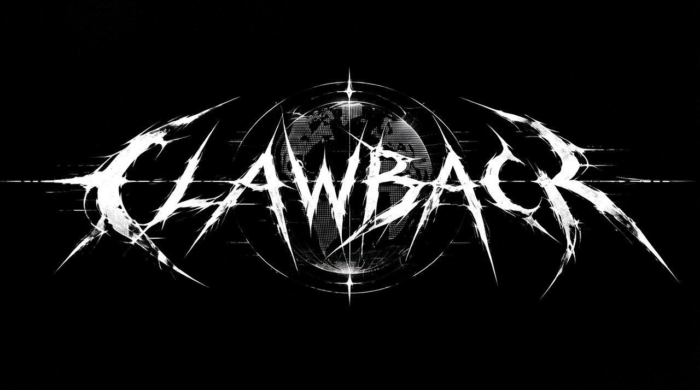

AUBEIG
ClawBack
Я создаю цифровые продукты, объединяя чистый код и эстетичный дизайн. От простых скриптов до сложных экосистем.
Проекты
Hydra User Bot
Мощнейший юзербот на базе современных технологий. Максимальная скорость и защита.
- Система плагинов
- Анти-спам защита
- Асинхронное ядро
Anon Bot
Система для полностью анонимного общения без логов и следов.
- End-to-End шифрование
- Все для Телеграм Каналов или Личного пользования
XGO Bot
Telegram AI-агент с пошаговым деревом рассуждений: сам выбирает инструменты, выполняет цепочки шагов и объясняет ход мыслей вместо чёрного ящика.
- 10 инструментов: поиск, exec, таблицы, графики, GitHub
- Дерево рассуждений вместо чёрного ящика
- Мультипровайдерный fallback
XLI
Экосистема на Go вокруг XGO Agent: бот, плагин для Nvim и своя терминальная тулза в духе opencode — но лучше.
- XGO Agent — ядро экосистемы на Go
- XLI Bot — Telegram-интерфейс к агенту
- XLI Nvim Plugin — агент прямо в редакторе
- XLI CLI — своя терминальная тулза
AnonShare
P2P-передача файлов напрямую через WebRTC. Сервер только знакомит — файл к нему не попадает.
- Файл летит напрямую между браузерами
- AES-GCM на клиенте + защищённый DataChannel
- Без регистрации, секрет живёт только в ссылке
Development
Разработка веб-сайтов, парсеров и утилит под заказ.
- Python (Aiogram/Pyrogram)
- HTML5 / CSS3 / JS
Магазин
Premium Tools
Партнеры

First Platform
Я ZFliers ( @NOZF_liers / @ZF_LIERS ), основатель проекта First Platform (сокращённо FP) , очень рад тебя тут видеть!
Ты блогер? Стример? Ведёшь свой тгк? Не проблема, у нас ты сможешь найти друзей/партнёров по съемкам.
В нашем проекте ты можешь увидеть:
- Дружелюбных администраторов которые могут вам помочь (не всегда)
- Не токсичных ребят, которые там участвуют
- Хорошую работу проекта и много разных идей от участников!
*Администрация в праве за собой отказывать в помощи если это не в их силах*
Здесь ты можете рекламировать свой канал, хоть YouTube, хоть telegram channel, хоть twitch. Все открыто..
Вопросы по проекту: модерация
Вопросы по рекламе: @ZF_LIERS
Другие вопросы: модерация
XLI Ecosystem
XGO Agent • XLI Bot • XGO Bot
Архитектура
XGO Agent
Ядро экосистемы на Go — выполняет задачи, работает с кодом и контекстом, служит движком для остальных компонентов.
XLI Bot
Telegram-бот поверх XGO Agent — доступ к агенту прямо из мессенджера.
XLI Nvim Plugin
Плагин для Neovim, встраивающий агента прямо в редактор кода.
XLI CLI
Собственная терминальная тулза в духе opencode, заточенная под XGO Agent.
XPI Plugin System
Плагинный слой поверх XLI: hot-reload без рестарта, единый стейт между TUI/Nvim/Headless, платформенные хуки для каждого плагина.
Безопасность инструментов
Перед любым exec-вызовом команда проходит SafeShell: чёрный список опасных паттернов (rm -rf /, mkfs, fork-бомба, shutdown/reboot и т.д.) плюс отдельная проверка на rm -rf без конкретного пути. Запись файлов — атомарная (через временный файл + os.replace), чтобы не оставить файл в битом состоянии при обрыве.
Внутренние подсистемы
14 модулей ядра, которые редко видны снаружи, но именно они решают, ретраить ли ошибку, что показать в ответе и как агент помнит прошлые сессии. Крути пилюлю и смотри, что под капотом.
Интерфейсы XLI CLI
HeadlessUI
headless.pyБезоконный режим для CI/CD и скриптов: запуск задачи из аргумента командной строки, без интерактива. Поддерживает многошаговый режим с делегированием субагентам через TaskTool.
XliTui
tui.py · TextualОсновной интерфейс XLI, полноценная TUI на Textual. Живая сетка из 5 агентов с прогресс-барами и статусами, лог активности и панель ввода задачи в одном экране.
NvimQuestionnaire
nvim.pyУточняющие вопросы агента показываются прямо в редакторе через vim.ui.select и vim.ui.input, без выхода из Neovim.
TerminalQuestionnaire
terminal.pyПростейший режим уточнения задачи через стандартный input() — работает везде, без зависимостей, служит базовым fallback для остальных режимов.
Живой пример: XLI CLI чинит баг
О боте
Telegram AI-ассистент на aiogram с пошаговым агентным циклом: бот сам решает, какой инструмент вызвать, выполняет цепочку из нескольких шагов и показывает ход рассуждений в виде дерева, а не просто выдаёт готовый ответ.
Живой пример: ответ и дерево рассуждений
Курс USD вырос на +1.4% за неделю, локальный пик пришёлся на среду. Собрал график по дневным котировкам ниже.
Инструменты агента
Web Search
Поиск в интернете прямо во время рассуждения.
Exec Code
Выполнение кода в песочнице для расчётов и обработки данных.
Table / Chart
Рендер таблиц и графиков (в т.ч. многосерийных) прямо в ответе.
Graph View
Визуализация связей и структур данных.
Presentation
Сборка презентаций из ответа агента.
File / Archive
Создание файлов и упаковка их в архив для отправки.
GitHub Commit / Read / Actions
Чтение репозитория, коммиты и запуск GitHub Actions прямо из чата.
Сжатие памяти диалога
Когда история диалога разрастается, бот сжимает старые сообщения в краткое резюме, сохраняя факты и решения, но убирая словесную "воду" — контекст остаётся полезным, а токены не кончаются.
До сжатия
Пользователь: расскажи про проект, потом уточнял детали по деплою три раза, потом спрашивал про переменные окружения, затем про логи, затем про откат версии...
~3400 tokensПосле сжатия
Резюме: пользователь деплоит проект X на сервер Y, использует .env с 4 переменными, включил ротацию логов, откат делает через тег предыдущего релиза.
~180 tokensНадёжность
Мультипровайдерный fallback — если основная модель недоступна, запрос уходит следующему провайдеру по списку без падения генерации. Отдельные таймауты на шаг и на весь агентный цикл, чтобы сложный запрос с несколькими тулами не обрывался раньше времени.
Настройки
Лицензия
ClawBack Public License (CPL) v1.0